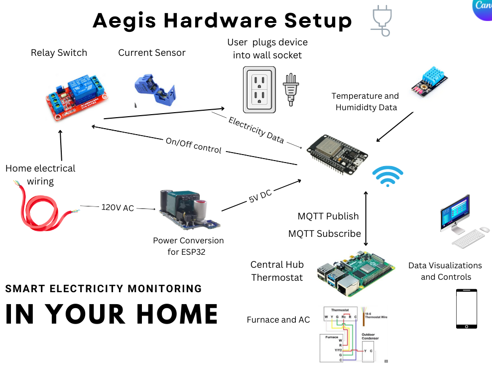
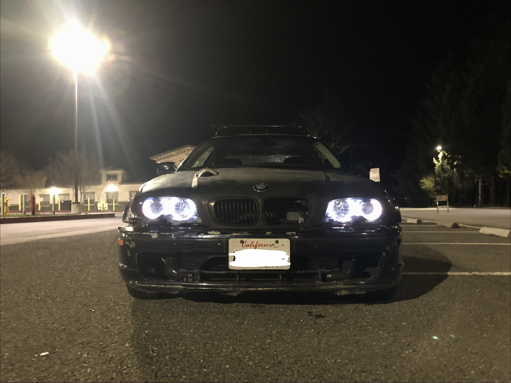
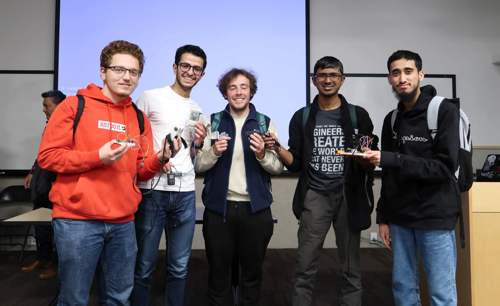
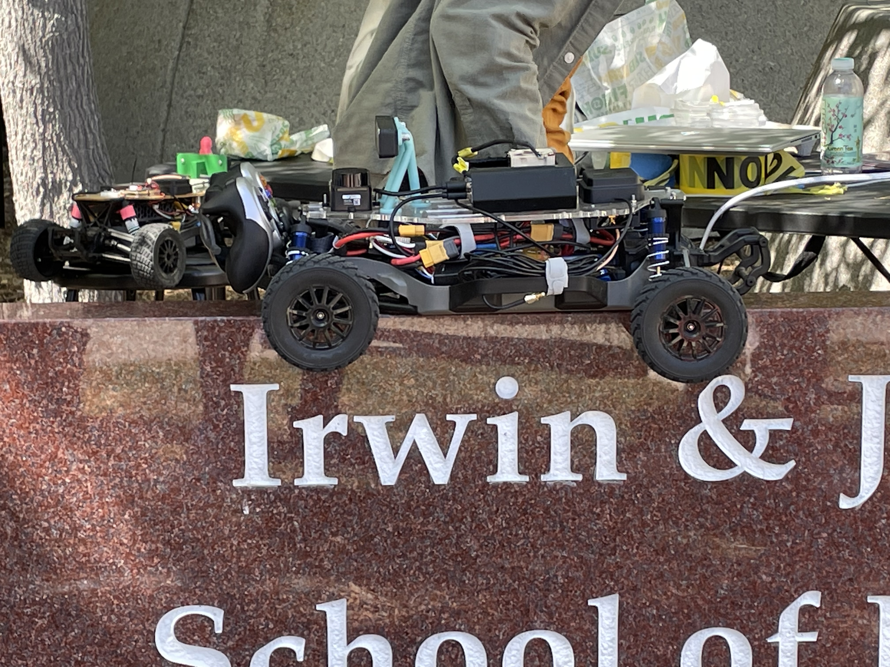

Dominic Orlando
About
I'm a Software Engineer at CSC Global. I got my MS in Electrical Engineering from UC San Diego in 2025, and my BS was in EE with a focus on Machine Learning and Controls.
I led the UCSD Cycling Team through college, and I'm currently racing for Deus Velox, a San Diego based cycling team, traveling and competing at a national level.
- Master's
- UCSD EE '25
- Bachelor's
- UCSD EE '24
- Focus
- ML & Controls
Cycling

- Rides this year
- --
- Miles this year
- --
- Feet climbed
- --
- Hours in saddle
- --
- KOMs
- --
- Career miles
- --
Recent KOMs
| Segment | Distance | Speed | Grade | Time | Power |
|---|---|---|---|---|---|
| Loading... | |||||
Projects

Aegis
A smart electricity monitoring system for the home. Uses an ESP32, current sensors, and MQTT to track power usage and control thermostat and HVAC.
View details
E46 Turbo Build
My 2002 BMW 325ci that I've been building. It started as an automatic but now has a 5-speed, a GT35 turbo, a built 3.0L motor, custom MS43 tune, and a welded diff.
View details
ProstheTech
A prosthetic device project that my team and I built at HARD Hack 2023. We came in as overall runner-up.
View details
Autonomous Car
Autonomous vehicle project for ECE 148. I worked on the hardware platform, integrating LiDAR, an Intel RealSense depth camera, and GNSS with DonkeyCar to get the car driving autonomously.
View details
Triton Crit
Organized and hosted a cycling race in San Diego for the UCSD Cycling Team. Managed city permits, USAC sanctioning, insurance, business outreach, and race day logistics.
View detailsThis Site
This portfolio site, which I built from scratch using HTML, CSS, and vanilla JavaScript.
Experience
- Software Engineer
- Sensing Intern
- Software Engineer
- Software Engineering Intern
- Hardware Engineering Intern
- President / Road Captain